Stage-2 run 1 (the D34 evidence model for the shape stage: the stage-2 flow model also sees the fused 3D evidence) on the same v2 stage 1 lowers CD from 0.0601 to 0.0579 (-3.7 %), better in 107/136 scenes, with every 3D metric improved (NC 0.797 → 0.804). At the held-out frames depth error is unchanged (0.0955 → 0.0954) and LPIPS slightly better (0.481 → 0.479), but rendered normals are ~1° worse (22.32° → 23.42°) and 2D completeness is lower (0.988 → 0.979). The gallery shows the trade: in the gain scenes run 1 removes surface that v2 leaves floating in free space (fc85fb414c) at the cost of small speckle holes in walls and floors; in the loss scenes it opens larger holes where v2 is solid (e3ecd49e2b: ceiling patches, the window frame, under the desk), the same failure mode as stage-2 run 2, much milder.
| run | CD ↓ | acc ↓ | compl ↓ | P ↑ | R ↑ | F@10 ↑ | NC ↑ |
|---|---|---|---|---|---|---|---|
| Complete3D-v2 (stock stage 2) | 0.0601 | 0.0613 | 0.0590 | 0.793 | 0.899 | 0.840 | 0.797 |
| v2 + stage-2 run 1 | 0.0579 | 0.0590 | 0.0568 | 0.795 | 0.901 | 0.842 | 0.804 |
| Δ (run 1 − v2) | -0.0022 | -0.0022 | -0.0022 | 0.002 | 0.002 | 0.002 | 0.006 |
CD = ½(accuracy + completeness), metres; P / R / F at 10 cm; predictions envelope-culled against the laser fusion (15 cm), 200 k area samples.
| run | depth MAE ↓ | normal° ↓ | 2D compl ↑ | LPIPS ↓ |
|---|---|---|---|---|
| Complete3D-v2 (stock stage 2) | 0.0955 | 22.32 | 0.988 | 0.481 |
| v2 + stage-2 run 1 | 0.0954 | 23.42 | 0.979 | 0.479 |
| Δ (run 1 − v2) | -0.0001 | 1.10 | -0.009 | -0.001 |
2D completeness = the share of pixels where the GT mesh is visible that the prediction covers at all.
| run | obs CD ↓ | obs P ↑ | obs R ↑ | unobs CD ↓ | unobs P ↑ | unobs R ↑ |
|---|---|---|---|---|---|---|
| Complete3D-v2 (stock stage 2) | 0.0571 | 0.805 | 0.912 | 0.0667 | 0.753 | 0.870 |
| v2 + stage-2 run 1 | 0.0549 | 0.806 | 0.915 | 0.0651 | 0.755 | 0.871 |
A GT sample is observed if any of the 8 input views sees it (81% of the GT on average).
Scenes: per-scene CD change (run 1 − v2) on the paired set → the two largest gains, the two closest to the median, the two largest losses. Orbit: one shared camera path, textured meshes, ceiling and upper walls cut away. Frames: official DSLR test frames (never input views); black = no surface.
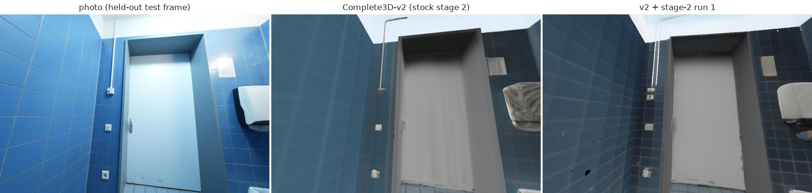
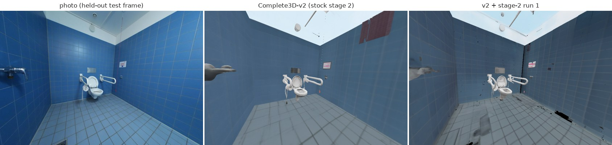
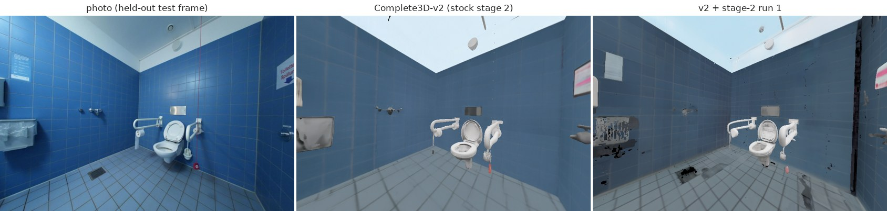
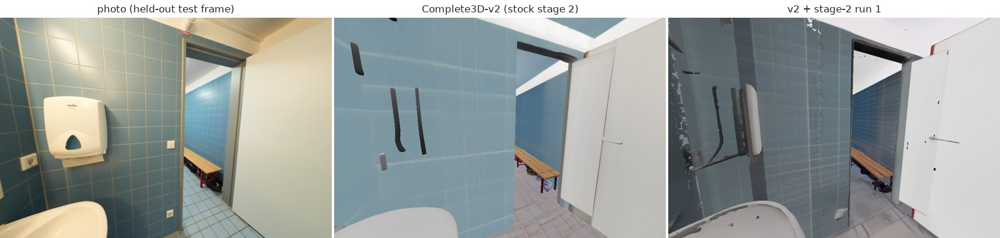
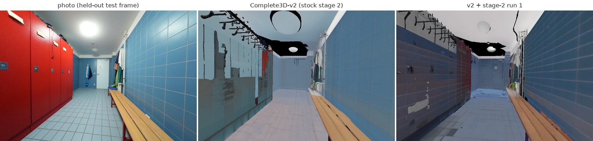
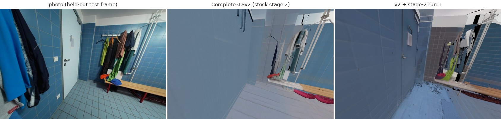
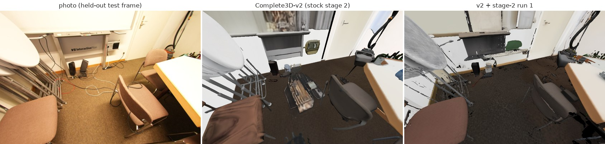
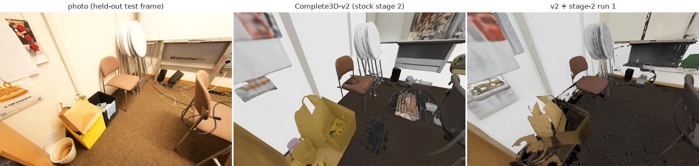
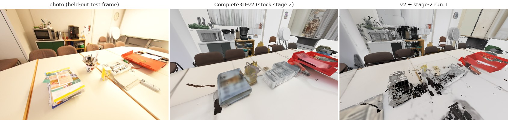
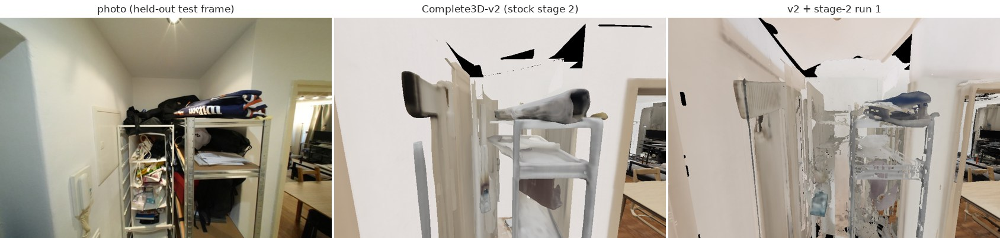
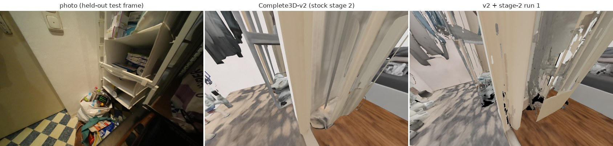
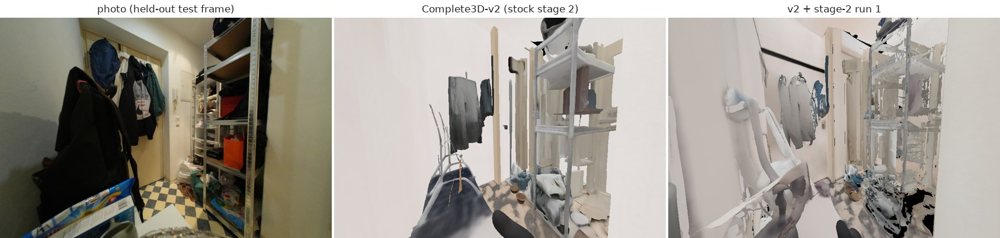
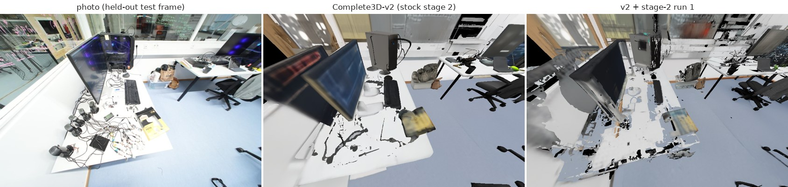
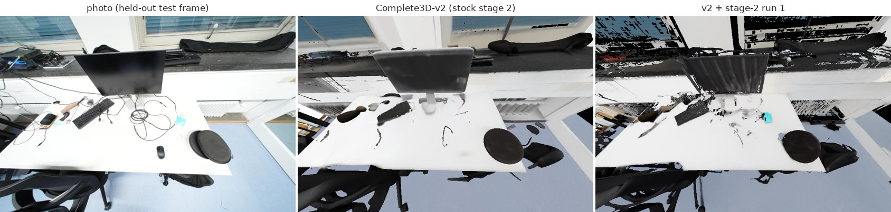
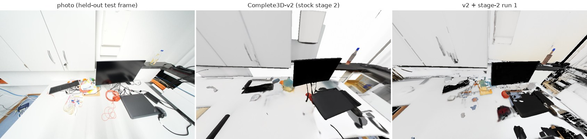
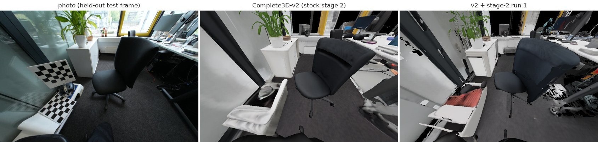
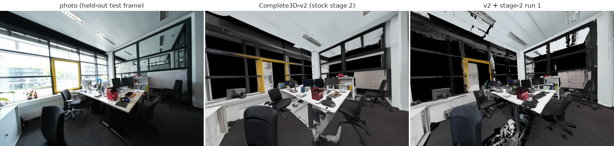
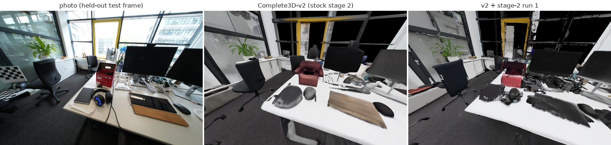
| scene | CD v2 | CD run 1 | Δ CD | 2D compl v2 | 2D compl run 1 | LPIPS v2 | LPIPS run 1 |
|---|---|---|---|---|---|---|---|
| dbd2a5961f | 0.0740 | 0.0707 | -0.0033 | 1.000 | 0.999 | 0.373 | 0.345 |
| dbd97b5bca | 0.0521 | 0.0480 | -0.0041 | 1.000 | 0.990 | 0.522 | 0.527 |
| dc204f59ae | 0.0842 | 0.0850 | 0.0008 | 0.999 | 0.959 | 0.500 | 0.511 |
| dc263dfbf0 | 0.0579 | 0.0540 | -0.0039 | 0.999 | 0.990 | 0.430 | 0.461 |
| dc5f00843f | 0.0564 | 0.0505 | -0.0059 | 0.996 | 0.988 | 0.381 | 0.394 |
| dd636ce603 | 0.0640 | 0.0643 | 0.0003 | 0.966 | 0.956 | 0.495 | 0.491 |
| dd685be466 | 0.0465 | 0.0475 | 0.0009 | 0.995 | 0.994 | 0.451 | 0.432 |
| de3c77cecd | 0.0958 | 0.0934 | -0.0025 | 0.969 | 0.949 | 0.494 | 0.509 |
| de5881aa12 | 0.0485 | 0.0445 | -0.0040 | 1.000 | 0.995 | 0.416 | 0.414 |
| de7dc9993f | 0.0530 | 0.0541 | 0.0011 | 0.999 | 0.989 | 0.378 | 0.405 |
| de83a9c2d7 | 0.0534 | 0.0526 | -0.0008 | 0.997 | 0.989 | 0.325 | 0.339 |
| deb1867829 | 0.0567 | 0.0472 | -0.0095 | 0.999 | 0.993 | 0.442 | 0.466 |
| dec0b11090 | 0.0613 | 0.0559 | -0.0054 | 0.986 | 0.953 | 0.443 | 0.479 |
| defd3457db | 0.1154 | 0.1122 | -0.0033 | 0.950 | 0.919 | 0.499 | 0.537 |
| dfa70fb232 | 0.0644 | 0.0594 | -0.0051 | 0.967 | 0.959 | 0.479 | 0.481 |
| dfac5b38df | 0.0453 | 0.0384 | -0.0069 | 0.997 | 0.993 | 0.468 | 0.466 |
| e01b287af5 | 0.0437 | 0.0411 | -0.0026 | 0.998 | 0.999 | 0.433 | 0.428 |
| e050c15a8d | 0.1932 | 0.1956 | 0.0023 | 0.764 | 0.744 | 0.631 | 0.622 |
| e0abd740ba | 0.0360 | 0.0399 | 0.0039 | 0.999 | 0.995 | 0.372 | 0.404 |
| e0d1ed2159 | 0.0419 | 0.0397 | -0.0022 | 1.000 | 1.000 | 0.441 | 0.391 |
| e0de253456 | 0.0396 | 0.0388 | -0.0007 | 0.995 | 0.992 | 0.609 | 0.565 |
| e1aa584dd5 | 0.0428 | 0.0433 | 0.0005 | 0.998 | 0.994 | 0.470 | 0.443 |
| e1b1d9de55 | 0.0540 | 0.0535 | -0.0005 | 0.999 | 0.991 | 0.492 | 0.490 |
| e1fb8626c8 | 0.0840 | 0.0842 | 0.0002 | 0.999 | 0.989 | 0.371 | 0.382 |
| e2caaaf5b5 | 0.0525 | 0.0515 | -0.0010 | 0.998 | 0.980 | 0.457 | 0.473 |
| e35232b92f | 0.0513 | 0.0509 | -0.0004 | 1.000 | 0.998 | 0.538 | 0.515 |
| e398684d27 | 0.0524 | 0.0507 | -0.0017 | 1.000 | 0.999 | 0.540 | 0.501 |
| e3ad7115db | 0.0521 | 0.0513 | -0.0008 | 0.995 | 0.995 | 0.483 | 0.463 |
| e3b3b0d0c7 | 0.2294 | 0.2234 | -0.0061 | 0.856 | 0.847 | 0.638 | 0.647 |
| e3c1da58dd | 0.0690 | 0.0666 | -0.0024 | 0.996 | 0.989 | 0.411 | 0.414 |
| e3c39f4aea | 0.0564 | 0.0569 | 0.0005 | 0.989 | 0.984 | 0.488 | 0.480 |
| e3ecd49e2b | 0.0502 | 0.0557 | 0.0055 | 0.976 | 0.948 | 0.490 | 0.508 |
| e3ef8b690b | 0.0507 | 0.0505 | -0.0002 | 0.976 | 0.976 | 0.433 | 0.426 |
| e4007ff6b5 | 0.0621 | 0.0618 | -0.0002 | 1.000 | 0.997 | 0.535 | 0.527 |
| e4e625a3e4 | 0.0466 | 0.0461 | -0.0004 | 0.997 | 0.993 | 0.443 | 0.414 |
| e4fb2a623b | 0.0499 | 0.0540 | 0.0041 | 0.997 | 0.952 | 0.429 | 0.471 |
| e51b753e48 | 0.0542 | 0.0547 | 0.0005 | 0.991 | 0.985 | 0.588 | 0.583 |
| e5a769dbf5 | 0.0631 | 0.0584 | -0.0047 | 0.993 | 0.994 | 0.332 | 0.354 |
| e6372539da | 0.0520 | 0.0510 | -0.0010 | 0.996 | 0.997 | 0.460 | 0.426 |
| e6671918c8 | 0.0500 | 0.0458 | -0.0042 | 0.998 | 0.994 | 0.586 | 0.581 |
| e667e09fe6 | 0.0601 | 0.0565 | -0.0036 | 0.991 | 0.978 | 0.509 | 0.523 |
| e69064f2f3 | 0.0546 | 0.0539 | -0.0007 | 0.977 | 0.975 | 0.555 | 0.541 |
| e7ac609391 | 0.0661 | 0.0646 | -0.0016 | 0.990 | 0.986 | 0.723 | 0.721 |
| e7af285f7d | 0.0745 | 0.0716 | -0.0029 | 0.991 | 0.984 | 0.560 | 0.569 |
| e7ccd75e5d | 0.0507 | 0.0511 | 0.0004 | 0.998 | 0.994 | 0.435 | 0.424 |
| e7d7e7799d | 0.0493 | 0.0500 | 0.0007 | 0.995 | 0.988 | 0.523 | 0.507 |
| e814070fd4 | 0.0496 | 0.0455 | -0.0041 | 1.000 | 0.998 | 0.372 | 0.368 |
| e81c8b3eec | 0.0437 | 0.0445 | 0.0008 | 0.997 | 0.983 | 0.482 | 0.488 |
| e86c6742b9 | 0.0766 | 0.0736 | -0.0030 | 1.000 | 0.992 | 0.406 | 0.436 |
| e87f1ebcac | 0.0608 | 0.0508 | -0.0100 | 0.976 | 0.973 | 0.560 | 0.533 |
| e898c76c1f | 0.0569 | 0.0478 | -0.0091 | 0.995 | 0.994 | 0.371 | 0.363 |
| e8e81396b6 | 0.0417 | 0.0411 | -0.0006 | 0.994 | 0.977 | 0.538 | 0.546 |
| e8ea9b4da8 | 0.0485 | 0.0509 | 0.0024 | 0.998 | 0.997 | 0.598 | 0.590 |
| e909f8213d | 0.0460 | 0.0447 | -0.0013 | 0.983 | 0.979 | 0.505 | 0.490 |
| e91722b5a3 | 0.0692 | 0.0643 | -0.0049 | 0.994 | 0.974 | 0.467 | 0.485 |
| e93cd5230e | 0.0631 | 0.0614 | -0.0017 | 0.992 | 0.988 | 0.424 | 0.437 |
| e945643bef | 0.0454 | 0.0457 | 0.0003 | 0.999 | 0.995 | 0.419 | 0.408 |
| e9ac2fc517 | 0.0770 | 0.0683 | -0.0087 | 0.967 | 0.931 | 0.571 | 0.589 |
| e9e16b6043 | 0.0531 | 0.0529 | -0.0002 | 1.000 | 0.990 | 0.548 | 0.554 |
| ea3b3710a2 | 0.0451 | 0.0426 | -0.0025 | 0.999 | 0.993 | 0.547 | 0.494 |
| ea42cd27e6 | 0.0460 | 0.0451 | -0.0009 | 0.996 | 0.995 | 0.405 | 0.396 |
| eaa6c90310 | 0.0463 | 0.0458 | -0.0005 | 0.997 | 0.991 | 0.542 | 0.526 |
| eaab7bcc15 | 0.0609 | 0.0568 | -0.0041 | 0.984 | 0.984 | 0.515 | 0.534 |
| eab5494dca | 0.0587 | 0.0590 | 0.0004 | 0.992 | 0.983 | 0.550 | 0.522 |
| eb4bc76767 | 0.0521 | 0.0541 | 0.0020 | 0.991 | 0.879 | 0.558 | 0.606 |
| eb8ef9b4cc | 0.0379 | 0.0361 | -0.0018 | 0.999 | 0.998 | 0.406 | 0.396 |
| ebc200e928 | 0.0519 | 0.0450 | -0.0070 | 1.000 | 0.994 | 0.446 | 0.429 |
| ec2cb8dae1 | 0.0567 | 0.0522 | -0.0045 | 0.997 | 0.994 | 0.439 | 0.440 |
| ec614d4e30 | 0.0489 | 0.0422 | -0.0067 | 1.000 | 0.995 | 0.433 | 0.390 |
| ec9ff6051d | 0.0471 | 0.0440 | -0.0031 | 0.998 | 0.996 | 0.507 | 0.493 |
| ed2216380b | 0.0644 | 0.0558 | -0.0086 | 0.999 | 0.991 | 0.394 | 0.421 |
| edbf65c385 | 0.0560 | 0.0494 | -0.0066 | 1.000 | 0.993 | 0.519 | 0.456 |
| edced53026 | 0.0474 | 0.0410 | -0.0064 | 0.997 | 0.986 | 0.456 | 0.455 |
| eea4ad9c04 | 0.0766 | 0.0737 | -0.0029 | 0.972 | 0.954 | 0.551 | 0.569 |
| eee7eef8e5 | 0.0779 | 0.0724 | -0.0055 | 0.881 | 0.848 | 0.508 | 0.538 |
| eeeb9836b8 | 0.0450 | 0.0447 | -0.0003 | 0.976 | 0.974 | 0.446 | 0.471 |
| ef18cf0708 | 0.0782 | 0.0761 | -0.0022 | 0.999 | 0.992 | 0.449 | 0.454 |
| ef25276c25 | 0.0569 | 0.0503 | -0.0066 | 0.989 | 0.971 | 0.504 | 0.504 |
| ef60db4e8c | 0.0589 | 0.0557 | -0.0032 | 0.997 | 0.986 | 0.520 | 0.518 |
| ef69d58016 | 0.0473 | 0.0471 | -0.0002 | 0.999 | 0.996 | 0.579 | 0.557 |
| ef9428c5cd | 0.0643 | 0.0604 | -0.0039 | 0.991 | 0.974 | 0.419 | 0.461 |
| f07340dfea | 0.0472 | 0.0434 | -0.0037 | 0.994 | 0.982 | 0.411 | 0.414 |
| f19ca0a52e | 0.0409 | 0.0409 | -0.0000 | 1.000 | 0.999 | 0.385 | 0.400 |
| f1e01af60a | 0.0479 | 0.0503 | 0.0024 | 0.996 | 0.984 | 0.474 | 0.474 |
| f1efd25854 | 0.0450 | 0.0436 | -0.0014 | 1.000 | 0.997 | 0.432 | 0.397 |
| f20ccd91de | 0.0500 | 0.0468 | -0.0031 | 0.999 | 0.993 | 0.537 | 0.507 |
| f248c2bcdc | 0.0772 | 0.0755 | -0.0017 | 0.935 | 0.921 | 0.574 | 0.586 |
| f25f5e6f63 | 0.0592 | 0.0529 | -0.0063 | 0.984 | 0.964 | 0.498 | 0.522 |
| f2dc06b1d2 | 0.0394 | 0.0412 | 0.0018 | 1.000 | 0.999 | 0.552 | 0.517 |
| f2e6c43543 | 0.0805 | 0.0759 | -0.0046 | 0.970 | 0.956 | 0.559 | 0.546 |
| f2ec1f6a04 | 0.0490 | 0.0504 | 0.0014 | 0.996 | 0.992 | 0.400 | 0.409 |
| f311090fa6 | 0.0507 | 0.0508 | 0.0000 | 0.992 | 0.987 | 0.501 | 0.487 |
| f33e242463 | 0.0597 | 0.0558 | -0.0039 | 1.000 | 0.999 | 0.393 | 0.390 |
| f34d532901 | 0.0618 | 0.0537 | -0.0081 | 0.996 | 0.989 | 0.461 | 0.478 |
| f3685d06a9 | 0.0436 | 0.0431 | -0.0004 | 1.000 | 0.999 | 0.553 | 0.493 |
| f368a1f730 | 0.0400 | 0.0390 | -0.0010 | 1.000 | 0.999 | 0.509 | 0.499 |
| f36e3e1e53 | 0.0492 | 0.0473 | -0.0019 | 0.998 | 0.993 | 0.483 | 0.512 |
| f38b0108a1 | 0.0646 | 0.0619 | -0.0027 | 0.994 | 0.993 | 0.485 | 0.477 |
| f3d64c30f8 | 0.1693 | 0.1676 | -0.0017 | 0.971 | 0.964 | 0.495 | 0.507 |
| f3f016ba3f | 0.0436 | 0.0434 | -0.0003 | 0.997 | 0.994 | 0.395 | 0.392 |
| f47ec86138 | 0.0706 | 0.0647 | -0.0059 | 0.972 | 0.968 | 0.433 | 0.462 |
| f4c5b0646f | 0.0427 | 0.0424 | -0.0003 | 1.000 | 0.997 | 0.437 | 0.447 |
| f5401524e5 | 0.0418 | 0.0429 | 0.0011 | 1.000 | 0.999 | 0.527 | 0.520 |
| f5726eeeb2 | 0.0459 | 0.0456 | -0.0003 | 0.996 | 0.990 | 0.510 | 0.490 |
| f576071590 | 0.0493 | 0.0492 | -0.0001 | 1.000 | 0.996 | 0.448 | 0.453 |
| f6659a3107 | 0.0546 | 0.0480 | -0.0065 | 0.995 | 0.978 | 0.411 | 0.411 |
| f6a9b64a0d | 0.0516 | 0.0482 | -0.0034 | 0.989 | 0.984 | 0.589 | 0.559 |
| f7d34e6706 | 0.0623 | 0.0592 | -0.0031 | 0.991 | 0.978 | 0.525 | 0.553 |
| f7da3f0714 | 0.0515 | 0.0509 | -0.0007 | 0.999 | 0.997 | 0.490 | 0.478 |
| f8062cb7ce | 0.1284 | 0.1288 | 0.0004 | 0.994 | 0.993 | 0.431 | 0.385 |
| f847086d15 | 0.0426 | 0.0417 | -0.0009 | 1.000 | 0.992 | 0.415 | 0.407 |
| f8d5147d1d | 0.0383 | 0.0368 | -0.0014 | 1.000 | 0.993 | 0.341 | 0.359 |
| f8e13ab4ae | 0.0419 | 0.0411 | -0.0008 | 0.999 | 0.997 | 0.423 | 0.422 |
| f8eac0ad24 | 0.0431 | 0.0405 | -0.0026 | 0.995 | 0.993 | 0.463 | 0.450 |
| f8f12e4e6b | 0.0470 | 0.0461 | -0.0009 | 0.996 | 0.992 | 0.466 | 0.467 |
| f9397af4cb | 0.0538 | 0.0542 | 0.0004 | 0.998 | 0.995 | 0.453 | 0.459 |
| f97de2c3e9 | 0.0637 | 0.0620 | -0.0017 | 0.989 | 0.988 | 0.585 | 0.579 |
| f9f95681fd | 0.0373 | 0.0371 | -0.0002 | 1.000 | 0.997 | 0.462 | 0.421 |
| faba6e97d7 | 0.0454 | 0.0406 | -0.0048 | 0.999 | 0.993 | 0.417 | 0.367 |
| faec2f0468 | 0.0945 | 0.0914 | -0.0031 | 0.967 | 0.950 | 0.645 | 0.685 |
| fb05e13ad1 | 0.0452 | 0.0428 | -0.0024 | 0.998 | 0.996 | 0.436 | 0.434 |
| fb152519ad | 0.0729 | 0.0704 | -0.0025 | 0.975 | 0.970 | 0.575 | 0.575 |
| fb564c935d | 0.0558 | 0.0481 | -0.0077 | 0.998 | 0.993 | 0.448 | 0.432 |
| fb5a96b1a2 | 0.0601 | 0.0547 | -0.0054 | 0.988 | 0.979 | 0.440 | 0.456 |
| fb893ffaf3 | 0.0941 | 0.0872 | -0.0069 | 0.952 | 0.943 | 0.603 | 0.598 |
| fb9b4c2f15 | 0.0446 | 0.0429 | -0.0017 | 0.993 | 0.988 | 0.436 | 0.408 |
| fc2875ea52 | 0.0713 | 0.0692 | -0.0021 | 0.983 | 0.984 | 0.515 | 0.542 |
| fc85fb414c | 0.0479 | 0.0363 | -0.0117 | 1.000 | 0.998 | 0.413 | 0.375 |
| fd361ab85f | 0.0572 | 0.0535 | -0.0037 | 0.998 | 0.986 | 0.486 | 0.490 |
| fd8560cfd6 | 0.0494 | 0.0508 | 0.0014 | 0.989 | 0.982 | 0.483 | 0.478 |
| fde8a3b4c0 | 0.0827 | 0.0855 | 0.0029 | 0.973 | 0.926 | 0.553 | 0.578 |
| fdf7f5cd5d | 0.0636 | 0.0623 | -0.0013 | 1.000 | 0.982 | 0.428 | 0.463 |
| fe1733741f | 0.0825 | 0.0803 | -0.0023 | 0.992 | 0.983 | 0.573 | 0.558 |
| fe3fc057a1 | 0.0490 | 0.0495 | 0.0006 | 0.998 | 0.992 | 0.517 | 0.523 |
| fe5fe0a8a4 | 0.1211 | 0.1199 | -0.0011 | 0.948 | 0.937 | 0.498 | 0.550 |
| ff17657f71 | 0.0387 | 0.0362 | -0.0025 | 1.000 | 0.996 | 0.393 | 0.382 |
Source: experiments/genrecon_eval/results/<run>/scannetpp/{summary.csv, 2d/summary_2d.csv, viewsplit/}; table values in data/metrics.json.